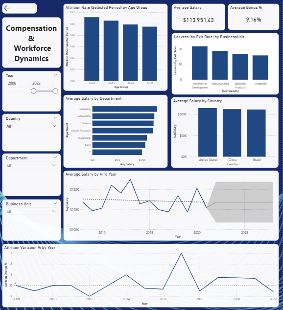

Contexte
Ce travail s’inscrit dans une analyse exploratoire visant à démontrer la valeur qu’une solution de Business Intelligence peut apporter à partir de données RH extraites d’un système hérité. Les données fournies représentent un échantillon de l’effectif de l’entreprise et incluent des informations relatives aux employés, aux départements et aux unités d’affaires.
L’objectif est d’analyser la structure et la qualité réelles des données, d’identifier ce qui est analytiquement fiable, et de produire des indicateurs concrets et actionnables, tout en respectant strictement les contraintes de confidentialité.
Importation et nettoyage des données
La première étape a consisté à nettoyer et préparer les données afin d’assurer leur cohérence et leur fiabilité pour l’analyse. Les types de données ont été standardisés, en particulier pour les identifiants, les dates et les montants financiers, et des contrôles ont été effectués pour identifier les lignes vides et les doublons exacts.
Les intitulés de poste ont été nettoyés et les incohérences typographiques corrigées (par exemple, en remplaçant « Sr. Manger » par « Sr. Manager »). Les noms de colonnes techniques ont été renommés pour améliorer la lisibilité du modèle, et les informations sensibles telles que les noms complets des employés ont été supprimées conformément aux bonnes pratiques de confidentialité des données.
Lors de l’analyse exploratoire, une attention particulière a été portée à la compréhension de la granularité des données. Il a été observé que différents employés peuvent partager le même EEID, ce qui signifie que cet identifiant ne représente pas un employé unique, mais plutôt un identifiant de niveau enregistrement.
Pour déterminer avec précision le nombre d’employés, une validation croisée des noms, de l’âge, du genre et des dates d’embauche a été réalisée. Cette analyse a révélé des cas où des employés portant des noms identiques présentaient des caractéristiques démographiques et temporelles incompatibles avec l’hypothèse qu’il s’agissait du même individu. Par exemple, des employés partageant le même nom pouvaient avoir des âges sensiblement différents et des années d’embauche très éloignées, ce qui exclut des scénarios tels que des réembauches ou des changements de poste internes.
Sur la base de ces observations, il a été conclu que, dans le périmètre de cet ensemble de données, chaque ligne représente un employé distinct. Cette conclusion s’appuie sur des observations factuelles et constitue une hypothèse de travail explicite pour la suite de l’analyse.

Modélisation des données
Sur la base de cette compréhension, plusieurs colonnes calculées ont été créées pour enrichir l’ensemble de données sans introduire d’hypothèses risquées. Une colonne Statut a été ajoutée pour identifier si un employé est actif ou inactif, selon la présence d’une date de sortie. Une colonne Ancienneté (années) a également été calculée pour mesurer la durée d’emploi, permettant l’analyse de l’expérience globale de l’effectif.
De plus, une table de dates dédiée a été créée pour soutenir l’analyse temporelle. Les relations ont ensuite été établies de manière simple et cohérente, reliant la table principale des employés aux tables des départements, des unités d’affaires et des dates par leurs identifiants respectifs.
Ce modèle relationnel permet une navigation fluide entre les analyses et garantit que les indicateurs calculés peuvent être analysés de manière cohérente par département, unité d’affaires, pays ou toute autre dimension organisationnelle pertinente.
Du point de vue des calculs, seuls les indicateurs jugés fiables compte tenu des données disponibles ont été retenus. L’effectif total est calculé comme le nombre de lignes dans l’ensemble de données, conformément à l’hypothèse validée selon laquelle chaque ligne correspond à un employé distinct dans cet échantillon.
Des indicateurs agrégés tels que le salaire moyen, le pourcentage moyen de bonus et l’ancienneté moyenne ont été calculés pour offrir une vue concise et significative de la structure de rémunération et de l’expérience de l’effectif.